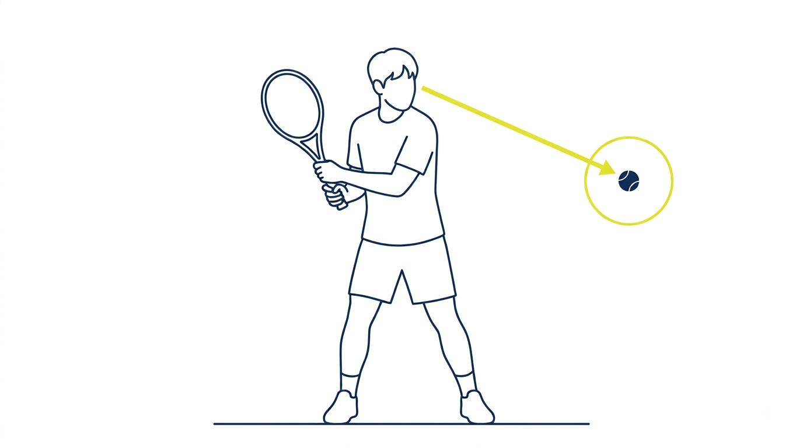
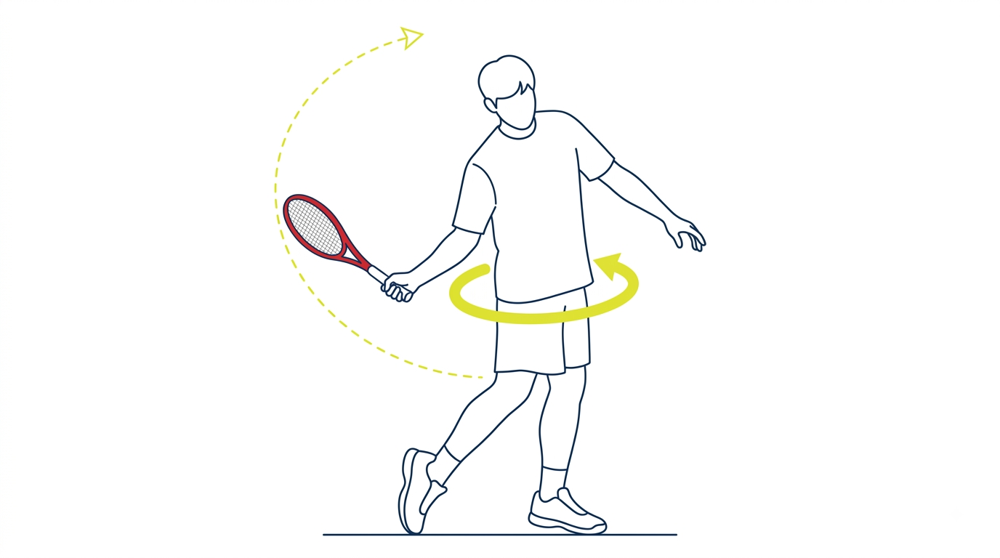
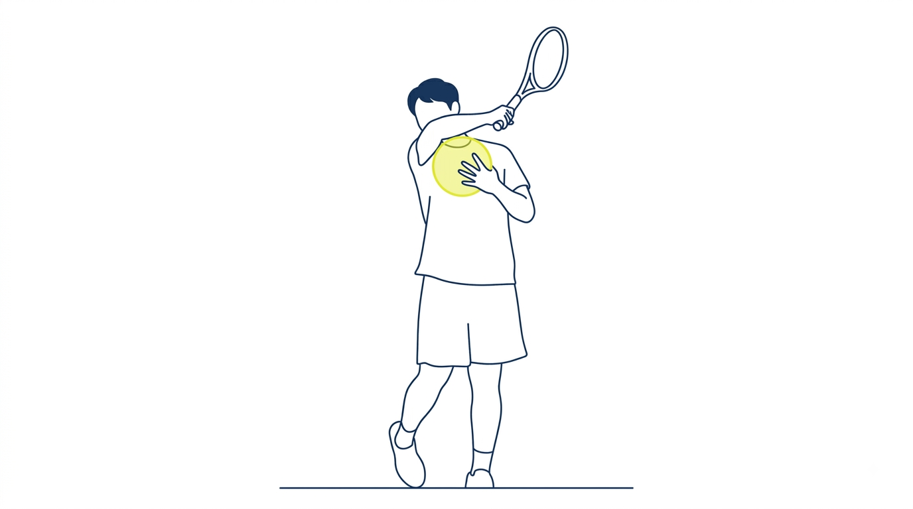

수업 전
선수처럼 강력한 포핸드 — 핵심 3가지
소개
선수처럼 강력한 포핸드를 만드는 세 가지를 익힙니다.
개요
시선으로 타점 거리를 잡고, 골반 회전으로 파워를 만들고, 피니시에서 공간을 남깁니다.
파워가 실리고, 정확도가 올라가고, 원하는 코스로 공을 보낼 수 있게 됩니다.
배울 내용
1시선 거리 잡기

공을 정면으로 보고 따라가면 첫 스텝이 정면으로 빠지고, 공이 몸에 가까워져 팔로 당기게 됩니다. 몸을 옆으로 틀어 공을 째려보면 타점을 멀리 둘 수 있습니다.
2골반 회전으로 파워 만들기

오른발 축이 뒤에 남으면 몸이 뒤로 무너지고 파워가 안 실립니다. 오른발을 먼저 돌려 골반 회전을 만들면 라켓이 뒤따라 나오며 채찍처럼 힘이 실립니다.
3피니시 공간 만들기

시선과 골반이 좋아도 겨드랑이가 붙으면 당기는 스윙이 됩니다. 가슴과 팔 사이에 농구공 하나만큼 공간을 두고 감싸 올리면 원하는 피니시가 나옵니다.